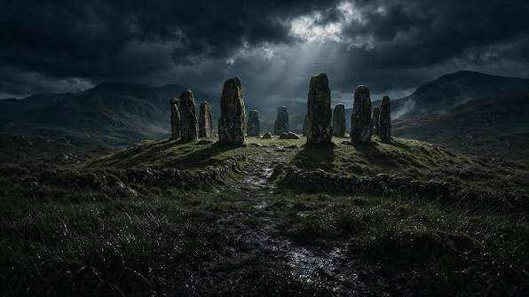
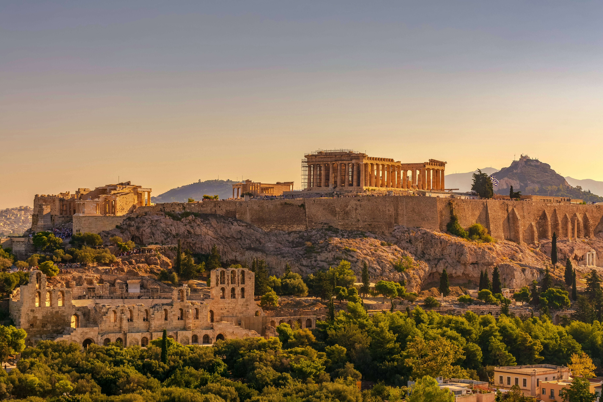

Explore the World of Ancient Legends
Discover ancient civilizations, mythical creatures, legendary gods, and mysterious stories from around the world.

Welcome to Mythic Archives, a digital encyclopedia dedicated to the fascinating world of ancient mythology.
Travel through time and discover the stories that shaped civilizations. Explore the mysterious and magical world
of legends.
Every legend has a story waiting to be discovered!
Explore some of the most famous civilizations that existed thousands of years ago.
Ancient Egypt is famous for its pyramids, pharaohs, temples, and mysterious hieroglyphics.

Ancient Greece introduced many famous myths about gods, heroes, and legendary creatures.

Ancient Rome is known for its powerful empire, grand architecture, and legendary history.

Indian mythology contains many fascinating stories about gods, heroes, and epic battles.
Mythical creatures are legendary beings found in stories from different cultures.
A legendary creature often described as a giant reptile with wings.
A mythical bird associated with fire and rebirth.
A legendary horse-like creature with a single horn.
A mythical creature with the body of a lion and the head of an eagle.
Discover some famous gods from ancient mythology.
The Phoenix is a legendary bird associated with fire and renewal.
According to ancient stories, the Phoenix represents rebirth and new beginnings.
It is often described as a beautiful bird with colorful feathers.
Medusa is a famous character from Greek mythology. She is often described as having snakes instead of hair.
Her story is one of the most well-known legends from ancient Greece.
Discover some fascinating historical places and mysterious monuments.
Discover some fascinating historical places and mysterious monuments.
A prehistoric monument in England made of large standing stones.
A legendary island civilization described in ancient Greek writings.
The ancient Egyptians worshipped many gods and goddesses.
Water is represented by the chemical formula H2O.
The sun is approximately 1.5 x 108 kilometers from Earth.
Note: Mythological stories are traditional cultural narratives and are not necessarily historical facts.Watch videos related to ancient civilizations and mythology.
Listen to peaceful sounds while exploring the world of ancient legends.
Follow these tips to learn more about ancient civilizations.
Explore the past. Discover the legends.
Copyright © 2026 Mythic Archives. All
rights reserved.